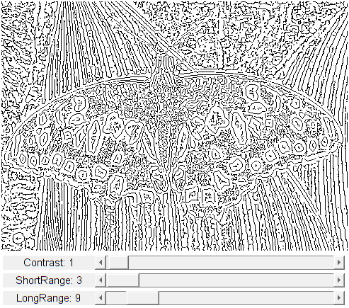

Bright edges detection
A new approach for visualizing edges. It uses the absolute difference of two blurs to compute gradients creating local minimas for edges. The histogram equalization makes the edges appears darker within a bright zone.
If a contrast value of zero is given no additional process is performed.
Otherwise a contrasting correction finds the local minimas and sets the edge to black, while setting the surrounding to white. A pixel correction restores line continuity and removes dark spots.
The default contrast value is 1 over a range of 255. This default contrast ensures visualizing edges on chessboard like images or low resolution images where small objects edges may be needed. Other contrast values will look for deeper local minimas, removing smaller details and only leaving higher gradient variations.
Souces:
function varargout = brightedges_demo_gui(im) % load source image if nargin < 1 im = fullfile(mexopencv.root(),'test','butterfly.jpg'); img = cv.imread(im, 'Color',true); elseif ischar(im) img = cv.imread(im, 'Color',true); else img = im; end assert(size(img,3) == 3, 'RGB image expected'); % create the UI h = buildGUI(img); if nargout > 0, varargout{1} = h; end end function onChange(~,~,h) %ONCHANGE Event handler for UI controls % retrieve current values from UI controls longRange = round(get(h.slid(1), 'Value')) * 2 + 1; shortRange = round(get(h.slid(2), 'Value')) * 2 + 1; % odd for GaussianBlur contrst = round(get(h.slid(3), 'Value')); set(h.txt(1), 'String',sprintf('LongRange: %d',longRange)); set(h.txt(2), 'String',sprintf('ShortRange: %d',shortRange)); set(h.txt(3), 'String',sprintf('Contrast: %d',contrst)); % histogram equalization out = cv.BrightEdges(h.src, ... 'Contrast',contrst, 'ShortRange',shortRange, 'LongRange',longRange); % show result set(h.img, 'CData',out); drawnow; end function h = buildGUI(img) %BUILDGUI Creates the UI % parameters contrst = 1; shortRange = 1; longRange = 4; out = cv.BrightEdges(img); sz = size(img); sz(2) = max(sz(2), 300); % minimum figure width % build the user interface (no resizing to keep it simple) h = struct(); h.src = img; h.fig = figure('Name','BrightEdges Demo', ... 'NumberTitle','off', 'Menubar','none', 'Resize','off', ... 'Position',[200 200 sz(2) sz(1)+80-1]); if ~mexopencv.isOctave() %HACK: not implemented in Octave movegui(h.fig, 'center'); end h.ax = axes('Parent',h.fig, 'Units','pixels', 'Position',[1 80 sz(2) sz(1)]); if ~mexopencv.isOctave() h.img = imshow(out, 'Parent',h.ax); else %HACK: https://savannah.gnu.org/bugs/index.php?45473 axes(h.ax); h.img = imshow(out); end h.txt(1) = uicontrol('Parent',h.fig, 'Style','text', 'FontSize',11, ... 'Position',[5 5 130 20], 'String','LongRange:'); h.txt(2) = uicontrol('Parent',h.fig, 'Style','text', 'FontSize',11, ... 'Position',[5 30 130 20], 'String','ShortRange:'); h.txt(3) = uicontrol('Parent',h.fig, 'Style','text', 'FontSize',11, ... 'Position',[5 55 130 20], 'String','Contrast:'); h.slid(1) = uicontrol('Parent',h.fig, 'Style','slider', ... 'Value',longRange, 'Min',1, 'Max',30, 'SliderStep',[1 5]./(30-1), ... 'Position',[135 5 sz(2)-135-5 20]); h.slid(2) = uicontrol('Parent',h.fig, 'Style','slider', ... 'Value',shortRange, 'Min',1, 'Max',30, 'SliderStep',[1 5]./(30-1), ... 'Position',[135 30 sz(2)-135-5 20]); h.slid(3) = uicontrol('Parent',h.fig, 'Style','slider', ... 'Value',contrst, 'Min',0, 'Max',100, 'SliderStep',[1 10]./(100-0), ... 'Position',[135 55 sz(2)-135-5 20]); % hook event handlers, and trigger default start set(h.slid, 'Callback',{@onChange,h}, ... 'Interruptible','off', 'BusyAction','cancel'); onChange([],[],h); end